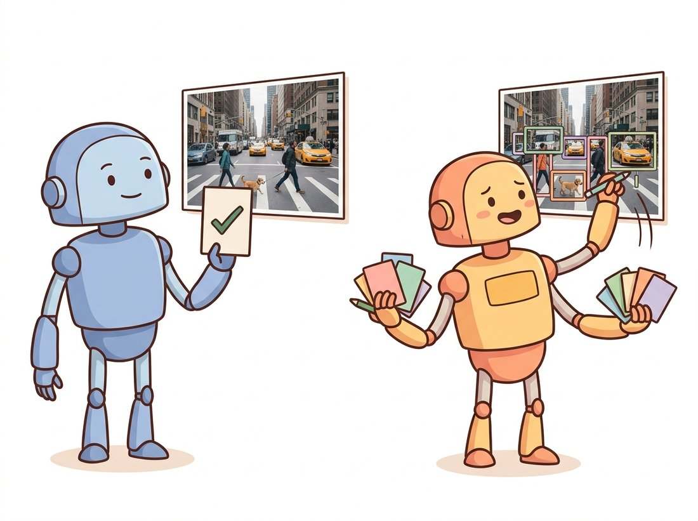
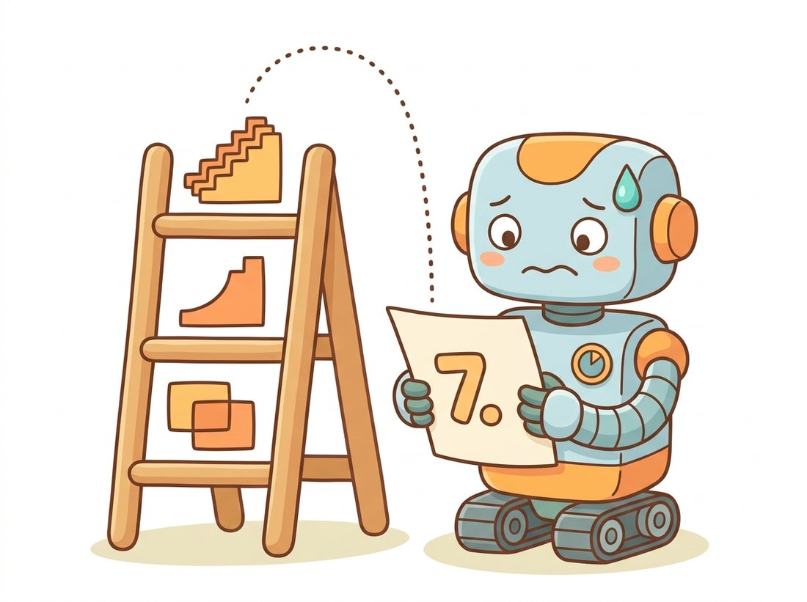

"They asked me how good my boxes were. I said most of them are pretty close. That, it turns out, is not a number. So they invented one, then another to average the first, then a third to average that. Now my report card is a single decimal and I lie awake worrying about the second digit."
A Detector Anxious About Its Average Precision
Detection turns a fixed-output classifier into a variable-output set predictor, and the entire chapter is shaped by the metrics that score such a set: intersection-over-union to judge a single box, and mean average precision to summarize a whole detector across every confidence threshold at once. Before you can train a detector you must be able to say, precisely, whether a predicted box is right. That requires deciding when a box overlaps the truth enough to count (IoU), how to trade false positives against missed objects (precision and recall), how to collapse a precision-recall curve into one number per class (average precision), and how to average across classes (mean average precision). These are not afterthoughts; the IoU threshold appears in every loss function, and the mAP protocol decides which architectures the field declares winners. This section builds all of them from scratch in NumPy so that when later sections cite "37.4 mAP", you know exactly what was measured.
In the previous chapters a network mapped an image to one decision. A classifier sees a photo and returns "cat"; a Vision Transformer from Chapter 22 sees a photo and returns "cat" with a probability. Object detection asks for much more. Given the same photo, a detector must return a list: a cat at pixels (x1, y1, x2, y2) with confidence 0.94, a sofa at (x3, y3, x4, y4) with confidence 0.81, and so on, with the length of that list depending on what is actually in the image. The output is a set of localized, classified, scored predictions, and the number of elements is not known in advance. Everything difficult about detection flows from that one fact, and so does everything in this section, because before we can build a model that emits such a set we must agree on how to grade it (the illustration below contrasts the two jobs).

1. What a Detector Outputs Beginner
A single detection is a tuple: a class label, a confidence score in $[0, 1]$, and a bounding box. The box is the geometric heart of detection, so fix its conventions now to avoid the off-by-one and format confusions that cause more detector bugs than any algorithm. The two dominant formats are corner format, written $(x_{\min}, y_{\min}, x_{\max}, y_{\max})$, the pixel coordinates of the top-left and bottom-right corners, and center format, written $(c_x, c_y, w, h)$, the center coordinate plus width and height. torchvision and COCO use corner format; YOLO predicts and stores center format (often normalized to $[0, 1]$ by the image size). Converting between them is trivial but must be done consistently, and a great many "the model trained but predicts nonsense" reports trace to a silent format mismatch.
Image coordinates put the origin at the top-left, $x$ increasing to the right and $y$ increasing downward, the same convention you have used since Chapter 1. Figure 23.1.1 shows the two formats on one box and names the quantities we will use throughout the chapter.
The code below defines the conversions we will reuse. Run it against the figure: a box whose corners are $(120, 100)$ and $(280, 210)$ has center $(200, 155)$, width $160$, and height $110$.
# Convert bounding boxes between the two conventions used in detection:
# corner format (x_min, y_min, x_max, y_max) and center format (cx, cy, w, h).
# The conversions are exact inverses, which gives us a free round-trip test.
import numpy as np
def corner_to_center(box):
"""(x_min, y_min, x_max, y_max) -> (cx, cy, w, h)."""
x1, y1, x2, y2 = box
return np.array([(x1 + x2) / 2, (y1 + y2) / 2, x2 - x1, y2 - y1])
def center_to_corner(box):
"""(cx, cy, w, h) -> (x_min, y_min, x_max, y_max)."""
cx, cy, w, h = box
return np.array([cx - w / 2, cy - h / 2, cx + w / 2, cy + h / 2])
b = np.array([120, 100, 280, 210]) # corner format
print(corner_to_center(b)) # [200. 155. 160. 110.]
print(center_to_corner(corner_to_center(b)))# [120. 100. 280. 210.] round-trips
corner_to_center and center_to_corner pair are exact inverses, so the round-trip on the last line is the cheapest sanity check there is: convert and convert back, and you must recover the original box $(120, 100, 280, 210)$ exactly.2. Intersection over Union: Scoring One Box Beginner
A predicted box almost never matches a ground-truth box exactly, so we need a continuous measure of how well they overlap. The standard is intersection over union (IoU), also called the Jaccard index: the area of the overlap of two boxes divided by the area of their union.
IoU is $0$ when the boxes are disjoint, $1$ when they coincide exactly, and somewhere in between otherwise. It is invariant to the overall scale of the image and it penalizes both a box that is too large (extra union) and one that is too small (missing intersection), which is exactly why it became the universal currency of detection. A detection is conventionally counted as correct when its IoU with a ground-truth box of the same class exceeds a threshold, classically $0.5$. Figure 23.1.2 shows the geometry: the intersection rectangle is found by taking the larger of the two left edges, the larger of the two top edges, the smaller of the two right edges, and the smaller of the two bottom edges.
The implementation follows the figure line for line, and it is worth getting exactly right because every matching decision and every loss in the chapter calls it. Notice the max(0, ...) clamp: when the boxes do not overlap, the naive intersection width or height goes negative, and without the clamp you would compute a spurious positive area.
def iou(box_a, box_b):
"""IoU of two corner-format boxes (x_min, y_min, x_max, y_max)."""
# Intersection rectangle: inner edges of the two boxes.
x1 = max(box_a[0], box_b[0])
y1 = max(box_a[1], box_b[1])
x2 = min(box_a[2], box_b[2])
y2 = min(box_a[3], box_b[3])
inter = max(0.0, x2 - x1) * max(0.0, y2 - y1) # clamp handles no-overlap
area_a = (box_a[2] - box_a[0]) * (box_a[3] - box_a[1])
area_b = (box_b[2] - box_b[0]) * (box_b[3] - box_b[1])
union = area_a + area_b - inter
return inter / union if union > 0 else 0.0
A = [60, 60, 260, 210] # ground truth
B = [170, 110, 370, 260] # prediction
print(round(iou(A, B), 3)) # 0.176
print(round(iou(A, A), 3)) # 1.0 (a box overlaps itself perfectly)
max(0.0, ...) clamp turns a non-overlapping pair into zero area rather than a spurious positive, and the self-overlap test iou(A, A) on the last line (a box against itself must score exactly 1.0) is the unit test you should write first; it catches sign and area errors immediately.IoU is not only an evaluation metric; modern detectors train against it directly. Plain L1 or L2 regression on box coordinates does not correlate well with IoU (a box can be close in coordinate error yet poor in overlap, or vice versa), so detectors increasingly minimize an IoU-based loss such as GIoU, DIoU, or CIoU. Those variants add penalty terms for the distance between box centers and the aspect-ratio mismatch, which gives a useful gradient even when two boxes do not yet overlap and ordinary IoU is flat at zero. Whenever you see "CIoU loss" in a detector's config, this is the quantity it is shaping.
The three are a sequence of fixes. Let $C$ be the smallest axis-aligned box enclosing both the prediction and the target, $\rho$ the Euclidean distance between their centers, $c$ the diagonal length of $C$, and $w, h$ box width and height. Then:
GIoU's enclosing-box term is non-zero even when the boxes do not overlap, so it supplies a gradient where raw IoU is flat at zero; DIoU replaces that term with a center-distance penalty that pulls boxes together faster and more stably; and CIoU adds an aspect-ratio consistency term $v = \tfrac{4}{\pi^2}\big(\arctan\tfrac{w^{gt}}{h^{gt}} - \arctan\tfrac{w}{h}\big)^2$ with a weight $\alpha$, so the predicted box is rewarded for matching the target's shape, not just its location and overlap.
3. Precision, Recall, and the Matching Rule Intermediate
With IoU in hand we can classify each prediction. For a single class and a single image, sort the predictions by confidence, then walk down that list assigning each prediction to the highest-IoU unassigned ground-truth box of the same class. A prediction is a true positive (TP) if its best match has IoU above the threshold and that ground-truth box has not already been claimed by a higher-confidence prediction; otherwise it is a false positive (FP). Any ground-truth box left unclaimed at the end is a false negative (FN), a missed object. The "already claimed" rule is what punishes duplicate boxes: if a detector fires three nearly identical boxes on one object, only the most confident one is a TP and the other two are FPs.
From these counts come the two quantities you balance for the rest of your detection career. Precision is the fraction of predictions that were correct, $\text{TP} / (\text{TP} + \text{FP})$: how much you can trust a box the model emits. Recall is the fraction of ground-truth objects that were found, $\text{TP} / (\text{TP} + \text{FN})$: how little the model misses. They trade off against each other through the confidence threshold. Lower the threshold and you emit more boxes, finding more objects (higher recall) but admitting more junk (lower precision); raise it and the reverse happens. A single (precision, recall) pair therefore describes only one operating point, which is why no serious detector is summarized by one number at one threshold.
Who: a three-person startup building a warehouse safety camera that detects whether workers near a forklift are wearing a hard hat, 2023. Situation: their detector reached a respectable mAP in the lab, and a demo at a default confidence threshold of 0.25 looked great. Problem: in the warehouse, the threshold that looked good in the demo flooded the operations team with false alarms on shadows and helmets-shaped boxes, and they muted the system within a week. Decision: the team realized they had been optimizing and demoing at one operating point while the customer needed a very different one. They plotted the full precision-recall curve, chose the threshold where precision hit 0.95 (alarms must be trustworthy or they get ignored), and accepted the lower recall that came with it, supplementing with a periodic full-frame review for the missed cases. Result: alarm volume dropped tenfold, the operations team re-enabled the system, and it stayed on. Lesson: mAP summarizes the whole curve, but a deployed detector lives at a single chosen threshold; pick it from the precision-recall curve against the customer's real cost of a false alarm versus a miss, not from whatever the demo defaulted to.
4. Average Precision: Collapsing the Curve Intermediate
Sweep the confidence threshold from high to low and at each setting you get a (recall, precision) point; together they trace the precision-recall curve. A good detector stays high and to the right: high precision maintained even as recall grows. Average precision (AP) for a class is the area under that curve, a single number in $[0, 1]$ that summarizes performance across all thresholds at once. Equivalently, AP is the precision averaged over all recall levels.
The mechanics are: rank every prediction for the class across the whole dataset by descending confidence, walk down the ranking accumulating TP and FP counts, and at each step record the running precision and recall. Because raw precision-recall curves are jagged (precision can briefly rise as recall increases), the COCO protocol applies a monotone envelope first, replacing precision at each recall with the maximum precision at that recall or any higher recall, and then integrates.
Why is the raw curve jagged in the first place? The cause is simple: as you walk down the ranking, each false positive drops precision, but the next true positive both raises recall and nudges precision back up, so the curve zig-zags downward rather than falling smoothly. The envelope simply ignores those upward wiggles by carrying each peak leftward, which makes AP depend only on the best precision achievable at each recall level. The formula for the interpolated AP is
where $p(r)$ is the measured precision at recall $r$. Figure 23.1.3 shows a jagged curve and the staircase envelope whose area is AP.
The function below computes AP for one class from a list of (confidence, is_true_positive) pairs and the total count of ground-truth objects. It implements the rank-accumulate-interpolate-integrate recipe directly so you can see every step.
def average_precision(detections, n_ground_truth):
"""detections: list of (confidence, is_tp) for one class, across the dataset.
n_ground_truth: total number of GT boxes of this class."""
if n_ground_truth == 0:
return 0.0
# 1. Rank by descending confidence.
detections = sorted(detections, key=lambda d: -d[0])
tp = fp = 0
precisions, recalls = [], []
for _, is_tp in detections:
tp += int(is_tp)
fp += int(not is_tp)
precisions.append(tp / (tp + fp))
recalls.append(tp / n_ground_truth)
# 2. Monotone envelope: precision is made non-increasing in recall (from the right).
for i in range(len(precisions) - 2, -1, -1):
precisions[i] = max(precisions[i], precisions[i + 1])
# 3. Integrate precision over recall (sum of rectangles between recall steps).
ap, prev_recall = 0.0, 0.0
for p, r in zip(precisions, recalls):
ap += p * (r - prev_recall)
prev_recall = r
return ap
dets = [(0.95, 1), (0.91, 1), (0.88, 0), (0.80, 1), (0.74, 0), (0.65, 1)]
print(round(average_precision(dets, n_ground_truth=4), 3)) # 1.0
average_precision. With 4 true positives among 6 ranked detections and the high-confidence ones all correct, the monotone envelope fills the unit square and AP reaches 1.0.5. Mean Average Precision and the COCO Protocol Intermediate
Mean average precision (mAP) is simply the AP averaged over all classes. That is the headline number every detector reports, but the details of how it is computed matter enormously when you compare papers, so pin them down. The older PASCAL VOC protocol (see the classical recognition pipelines of Chapter 16 for the lineage) computes AP at a single IoU threshold of $0.50$ and means over the 20 VOC classes. The modern COCO protocol is stricter and is the one you will see almost everywhere today: it computes AP at ten IoU thresholds from $0.50$ to $0.95$ in steps of $0.05$ and averages those too, then means over 80 classes. The COCO headline number written "mAP" or "AP" is this $\text{AP}@[0.50{:}0.95]$, and it punishes loose localization far more than VOC's single lenient threshold does.
| Name | IoU thresholds averaged | Classes | Notes |
|---|---|---|---|
| VOC mAP | single, 0.50 | 20 | Lenient on localization; older papers. |
| COCO AP (mAP) | 0.50 to 0.95 step 0.05 (ten values) | 80 | The default headline metric today. |
| COCO AP50 / AP75 | single, 0.50 / single, 0.75 | 80 | Reported alongside for detail. |
| COCO APs / APm / APl | 0.50 to 0.95, by object size | 80 | Small / medium / large object breakdown. |
The size-stratified numbers (APs for small, APm for medium, APl for large objects) deserve a moment, because they reveal the single most consistent weakness of detectors: small objects score far lower than large ones, since a few-pixel box is hard to localize within $0.05$ IoU steps. When a vendor advertises a high overall mAP, asking for the APs is the fastest way to learn whether the model will work on the distant pedestrians or tiny defects you actually care about. Table 23.1.1 is the legend you should keep beside any detection benchmark.
The from-scratch AP above is for understanding. For a real benchmark, use the reference implementation so your numbers are comparable to published ones. The pycocotools package computes the full COCO suite from your predictions in JSON:
# Score detections with the reference COCO evaluator instead of a hand-rolled AP.
# Load ground-truth and predictions in COCO JSON, then run the standard
# evaluate / accumulate / summarize sequence to print the full AP suite.
from pycocotools.coco import COCO
from pycocotools.cocoeval import COCOeval
coco_gt = COCO("instances_val.json") # ground-truth annotations
coco_dt = coco_gt.loadRes("predictions.json") # your detections, COCO JSON format
ev = COCOeval(coco_gt, coco_dt, iouType="bbox")
ev.evaluate(); ev.accumulate(); ev.summarize() # prints AP, AP50, AP75, APs/m/l
pycocotools. The COCOeval object handles the cross-image ranking, the ten IoU thresholds, the 100-detection-per-image cap, and the crowd-annotation rules internally, letting you focus on producing predictions in COCO JSON rather than reimplementing the matching and interpolation by hand.Roughly 200 lines of careful matching, interpolation, per-size bucketing, and edge-case handling collapse into five lines. The library handles the cross-image ranking, the ten IoU thresholds, the 100-detection cap per image, and the crowd-annotation rules that the COCO leaderboard enforces, all of which a hand-rolled evaluator gets subtly wrong. The torchmetrics.detection.MeanAveragePrecision class wraps the same computation for use inside a PyTorch validation loop.
Students often read "85 mAP" and picture pixel-accurate boxes. That is not what the number says, especially at the lenient VOC threshold. mAP@0.50 counts a box as correct the moment its IoU with the truth clears $0.50$, so a detector whose boxes are systematically loose (off by a quarter of the object on every side, IoU around $0.55$) can still score a high mAP@0.50 while being useless for any task that reads geometry off the box, like measuring an object's size or distance. The localization quality lives in the gap between AP50 and the strict COCO AP@[0.50:0.95]: a model at $85$ AP50 but $50$ AP@[0.50:0.95] localizes far worse than one at $85$ and $70$. Always read the strict COCO AP, not just AP50, before trusting a box's coordinates. A related trap: the confidence score is a ranking signal, not a calibrated probability of correctness, so a "0.9" box does not succeed 90 percent of the time unless the detector was explicitly calibrated.
Even as detectors saturate COCO mAP (the best DINO-family and co-detection models pushed past 63 AP by 2023 to 2024), researchers increasingly argue the metric hides what matters for deployment. Localization-Recall-Precision (LRP) error and the Optimal Correction (oLRP) metric proposed by Oksuz et al. give a more interpretable decomposition into localization, false-positive, and false-negative components than a single AP. For safety-critical use, calibration of the confidence score (does a 0.9 box really succeed 90 percent of the time?) is now studied as seriously as ranking quality, since a detector can have excellent mAP yet wildly miscalibrated confidences. And the rise of open-vocabulary detectors such as Grounding DINO (2024) and YOLO-World forces new protocols entirely, because the class list is no longer fixed at evaluation time. Expect "mAP" to remain the headline through 2026, but to be reported alongside calibration and per-size error in any careful study.
The COCO dataset is named "Common Objects in Context", and the "in context" is not marketing. Its annotators were instructed to label objects in natural, cluttered scenes rather than the centered, iconic single-object photos that earlier datasets favored. That is precisely why COCO mAP is so much harder than ImageNet classification: the dataset deliberately contains the crowded, occluded, oddly-cropped objects that a real camera sees, including a famous abundance of people, chairs, and cups that anchor the small-object problem.
6. Putting It Together: A Tiny End-to-End Evaluation Intermediate
To make the matching rule concrete, the snippet below evaluates a handful of predictions against ground truth for one class on one image, labeling each prediction TP or FP, then feeds the result to our average_precision function. This is the inner loop that the COCO evaluator runs millions of times, written plainly.
def match_predictions(preds, gts, iou_thresh=0.5):
"""preds: list of (confidence, box). gts: list of box. Returns (conf, is_tp) list."""
preds = sorted(preds, key=lambda p: -p[0]) # highest confidence first
claimed = [False] * len(gts)
results = []
for conf, pbox in preds:
best_iou, best_j = 0.0, -1
for j, gbox in enumerate(gts):
ov = iou(pbox, gbox)
if ov > best_iou:
best_iou, best_j = ov, j
if best_iou >= iou_thresh and not claimed[best_j]:
claimed[best_j] = True # this GT is now taken
results.append((conf, 1)) # true positive
else:
results.append((conf, 0)) # false positive (low IoU or duplicate)
return results
gts = [[60, 60, 260, 210], [300, 300, 420, 420]]
preds = [(0.92, [62, 64, 258, 205]), # good overlap with GT 0 -> TP
(0.85, [70, 70, 250, 200]), # duplicate of GT 0 -> FP (already claimed)
(0.60, [305, 305, 418, 418])] # good overlap with GT 1 -> TP
matched = match_predictions(preds, gts)
print(matched) # [(0.92, 1), (0.85, 0), (0.60, 1)]
print(round(average_precision(matched, len(gts)), 3)) # 1.0
match_predictions output straight into Code Fragment 3's average_precision. The middle prediction is a near-duplicate of the first; the claimed flag marks it a false positive, exactly the duplicate-suppression problem that non-maximum suppression and DETR's set loss exist to handle upstream.That duplicate false positive is a preview of the chapter's central engineering problem. Dense detectors emit many overlapping boxes per object, and the evaluation rule above punishes every extra one. The two-stage and one-stage families in the next sections solve it with a post-processing step called non-maximum suppression; DETR in Section 23.5 solves it by predicting a clean set in the first place. Either way, the metric you just built is the judge that forces the issue.
The three metrics of this section form one ladder, each rung averaging the rung below. IoU judges one box against one truth (overlap over union). AP judges one class across every confidence threshold (the area under its precision-recall curve). mAP judges the whole detector across every class (the mean of the per-class APs), and the COCO protocol averages once more over ten IoU thresholds. The signature phrase to remember is IoU grades a box, mAP grades the detector; everything in between is bookkeeping that turns one box's overlap into the single decimal a leaderboard prints. When a later section cites "37.4 mAP", read it as "averaged over classes, over thresholds, over the whole dataset", never as one tight box. The illustration below pictures the ladder as a single nervous report-card grade built from its rungs.

With only the IoU, matching, and average-precision code from this section you can build a small detection error explorer, the kind of tool every applied team eventually wants and few have. Feed it a folder of images, a ground-truth file, and any detector's predictions, and have it draw each image with true positives in green, false positives in red, and missed ground truth in blue, then plot the per-class precision-recall curve and print the AP next to it. Add a confidence slider that re-runs the matching live so you can watch the precision-recall trade-off move, exactly the operating-point choice the warehouse-camera story turned on. This is a beginner-friendly build (about 30 to 60 minutes on top of the functions above, since the hard parts are already written), it is genuinely portfolio-worthy because it shows you understand what the metric measures rather than just calling an evaluator, and it complements the end-of-chapter training lab by being the diagnostic you reach for after that lab gives you a suspicious mAP.
Two detectors, X and Y, both score VOC mAP@0.50 of 0.80. On the COCO protocol, X scores AP@[0.50:0.95] of 0.55 and Y scores 0.40. In two or three sentences, explain what this difference tells you about how the two detectors localize, which one you would trust for a task requiring tight boxes (say, measuring an object's size from its box), and why the single VOC threshold hid the gap.
The pairwise iou function loops over boxes one at a time, which is too slow for the thousands of boxes a detector produces. Write iou_matrix(boxes_a, boxes_b) that takes two arrays of shape (M, 4) and (N, 4) in corner format and returns an (M, N) matrix of all pairwise IoUs using NumPy broadcasting, with no Python loop over box pairs. Verify it against the scalar iou on a few pairs. This matrix is the workhorse inside non-maximum suppression and inside the matching loop of every evaluator.
Take the average_precision function and a fixed set of ranked detections for one class. Re-run it after discarding all detections below a confidence floor of 0.3, then 0.5, then 0.7. Plot AP and the maximum achievable recall as a function of the floor. Explain why a high floor can leave AP almost unchanged while sharply capping recall, and connect this to the warehouse-camera story in subsection 3: which quantity did that team actually need to control, and would raising the confidence floor have fixed their problem?